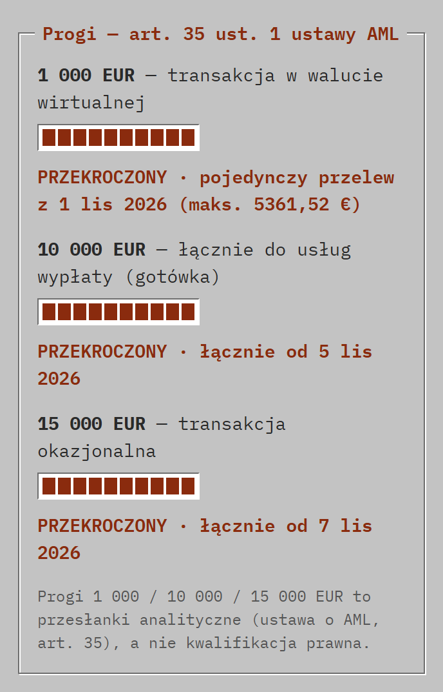

PIT-38
20 tys.
Tyle osób rocznie wykazuje kryptowaluty w PIT-38 — przy ok. 2,5 mln Polaków, którzy je mają.
Źródło: Bankier.pl, za danymi MF
HackNation 2026 · zadanie MF / KAS — OŁCyŚ
Od śladu w sieci do adresu kryptowaluty — z oceną pewności, uzasadnieniem i raportem dla analityka KAS.
Oleh Kropyva · zespół cebularz · stolik 8f
Bydgoszcz, 22.11.2026

Ślad pieniędzy
 1
2
1
2

3kurs średni NBP z dnia poprzedzającego transakcję (art. 11a ustawy o PIT)
1 000 / 10 000 / 15 000 EUR, pojedynczo i łącznie (art. 35 ust. 1 ustawy AML)
ponowna analiza co 15 min, 1 h lub 24 h; porównanie przebiegów; powiadomienia
Co dalej · kontakt
Pilotaż na zanonimizowanych sprawach KAS i strojenie wag
Etykiety KAS: własne listy adresów i dane z wniosków do giełd
Kolejne sieci i źródła — po ocenie prawnej
Integracja z systemami KAS: logowanie, eksport do akt
Oleh Kropyva
zespół cebularz
stolik 8f
mail@kropyva.com

github.com/